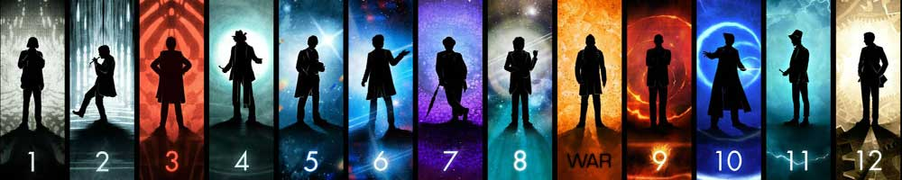

|  |
| Home | The Doctors | The Companions | The Villains | Show History |
The CompanionsIn the long-running BBC television science fiction programme Doctor Who and related works, the term "companion" refers to a character who travels with, or shares the adventures of the Doctor. In most Doctor Whostories, the primary companion acts as an audience surrogate. He or she provides the lens through which the viewer is introduced to the series. The companion character often furthers the story by asking questions and getting into trouble, or by helping, rescuing or challenging the Doctor. This designation is applied to a character by the show's producers, and appears in the BBC's promotional material and off-screen fictional terminology. Until the modern revival of the series in 2005, the term was rarely used on-screen. The Doctor also refers to the show's other leads as his "friends" or "assistants"; the British press have also used the latter term. In the earliest episodes of Doctor Who, the dramatic structure of the programme's cast was rather different from the hero-and-sidekick pattern that emerged later. Initially, the character of the Doctor was unclear, with uncertain motives and abilities.[1] The protagonists were schoolteachers Ian Chesterton and Barbara Wright, who provided the audience's point of view in stories set in Earth's history and on alien worlds. Ian in particular served the role of the action hero. The fourth character was the Doctor's granddaughter Susan, who (though initially presented as an "unearthly child") was intended[citation needed] as an identification figure for younger viewers. Carole Ann Ford, who played Susan Foreman, became unhappy with the lack of development for her character,[2] and chose to leave in its second series. The character of Susan was married off to a freedom fighter and left behind to rebuild a Dalek-ravaged Earth. Doctor Who's producers replaced Susan with another young female character, Vicki. Similarly, when Ian and Barbara left, the "action hero" position was filled by astronaut Steven Taylor. This grouping of the Doctor, a young heroic male and an attractive young female became the programme's pattern throughout the 1960s. When the programme changed to colour in 1970, its format changed: the Doctor was now Earth-bound, and acquired a supporting cast by his affiliation with the paramilitary organisation United Nations Intelligence Taskforce (UNIT). The Third Doctor, more active and physical than his predecessors, made the role of the "action hero" male companion redundant. In the 1970 season the Doctor was assisted by scientist Liz Shawand Brigadier Lethbridge-Stewart, along with other UNIT personnel (such as Sergeant Benton). The intellectual Shaw was replaced by Jo Grant in the 1971 season, and as the programme returned to occasional adventures in outer space, the format shifted once more: while UNIT continued to provide a regular "home base" for Earth-bound stories, in stories on other planets the Doctor and Jo became a two-person team with a close, personal bond. This pattern, the Doctor with a single female companion, became a template from which subsequent episodes of Doctor Who rarely diverged. The "heroic male" type occasionally returned (for example, Harry Sullivan, Adric, Vislor Turlough, Jack Harkness and Rory Williams), but the single female companion was Doctor Who's staple. The character of Harry Sullivan was created by the production team when it was expected that the Fourth Doctor would be played by an older actor who would have trouble with the activity expressed by his predecessor. In the event, the Fourth Doctor part went to 40-year-old Tom Baker and the part of Harry, no longer required for the action role, was reduced.[3] In the final season for the Fourth Doctor, he acquired three companions (Adric, Tegan and Nyssa) and this situation continued under the Fifth Doctor for a while. Adric was written out by the unusual method within the series of being "killed off". By the Sixth Doctor, the Doctor was down to a single companion again. |
Brendan Davey Monica DuCong'e Erik Eyler Kayleen Garcia Katie Hyche Ryan Moeller |
Christine O'Brien Alex Recinos Julia Schwartz Madeleine Schwartz Ann Marie Skjold Ashly Wilkins |
[Reference Links] |